Alessandro Ristori et Franciskey au Twiga
Jeudi 12 novembre
Dîner live d'Alessandro Ristori suivi d'une nuit clubbing avec Franciskey.
Ce soir
Les soirées de ce soir et les boîtes et bars ouverts en ce moment sur la Côte d'Azur et dans le Var, mis à jour en direct.
Jeudi 12 novembre
Dîner live d'Alessandro Ristori suivi d'une nuit clubbing avec Franciskey.
Jeudi 12 novembre
Diffusion du match de football Italie contre France sur grand écran.
Hard Techno · Acid Techno · Industrial
Jeudi 12 novembre
Before à L'Antre puis full night au Kosma pour le rendez-vous techno du jeudi.
House
Jeudi 12 novembre
Soirée étudiante de l'IUM avec Francis Key aux platines du Twiga Monte Carlo.
Tech House · Deep House · House
Jeudi 12 novembre
Session tech house intimiste avec Alex Duff au Glass Club dans le Carré d'Or.
Hip Hop · Rap · Club
Jeudi 12 novembre
Soirée étudiante et clubbing à thème horreur Purge au NAHO Club.
Techno · Deep House · Disco
Vendredi 13 novembre
Électro immersive et coucher de soleil dans le cadre historique du Fort Napoléon.
Vendredi 13 novembre
Sélections de la saison 5 du concours drag au Swing avec show et DJ set.
Afro House · House · Club
Vendredi 13 novembre
Fusion percussions live et clubbing chic oriental et afro house face à la mer à Antibes.
Funk · Pop
Vendredi 13 novembre
Live énergique pop fusion et world grooves au Quartier du Poulpe pour lancer le weekend.
RnB · Pop
Vendredi 13 novembre
Release party de l'EP HEAL de Yona en showcase intimiste gratuit au Frigo 16.
Pop
Vendredi 13 novembre
Rencontre pop et classique entre Arthur H et Vanessa Wagner en entrée libre.
Électro
Vendredi 13 novembre
Crête & Moustache et session sound system dub festive en format club au Live.
Vendredi 13 novembre
Before underground axé sonorités berlinoises et UK bounce dans le Vieux-Nice.
House · Hip Hop · Électro
Vendredi 13 novembre
Le barathon incontournable de Nice avec 4 bars, shots inclus et entrée VIP en club.
Disco · Électro
Vendredi 13 novembre
Soirée Vendredi 13 avec dress code vert et set festif de DJ Sylvain P sur 600 m².
Vendredi 13 novembre
Retransmission du choc de rugby France contre Afrique du Sud.
Électro · Pop · Club
Vendredi 13 novembre
Tournée des bars festifs du Vieux-Nice avec shots offerts et finish en boîte de nuit.
Pas de soirée annoncée ce soir pour l'instant : regarde les lieux ouverts juste en dessous, ou l'agenda des prochains jours. Toutes les soirées
Horaires relevés sur les sources officielles des lieux (site, Instagram, fiche Google). Ils peuvent changer, surtout les jours fériés : en cas de doute, vérifie sur leur Instagram avant d'y aller.

Club · Toulon Partenaires
Établissement nocturne combinant restaurant festif, bar à cocktails, karaoké et club ouvert tous les soirs.
Urban ShattaBefore Pacific Neon NightZouk Love Toulon Edition Chic

Club · Nice
Grand club généraliste de la Promenade des Anglais doté de plusieurs salles avec une programmation EDM, urbaine et des DJ sets internationaux.
Infos relevées le 9 novembre · source
Latin AddictI'm Not Rich But I'm HighStudents Party @ High Club

Bar · Mandelieu-la-Napoule Partenaires
Pub irlandais et bar de nuit situé en bord de mer, proposant restauration, retransmissions sportives, DJ sets et concerts live.
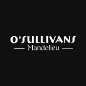
Pub · Mandelieu-la-Napoule
Grand pub irlandais situé sur le port qui se transforme le soir en boîte de nuit avec DJ sets et soirées à thème.
Infos relevées le 10 novembre · source

Club · Nice Partenaires
Ancienne chambre froide réaménagée en salle de concert et espace clubbing au sein du tiers-lieu Le 109. Le lieu accueille des soirées électro, techno, hip-hop et des événements alternatifs.
YONA – LQB Session #6Jetlag Gang (+ Opening Act)Caravel (+ No2theG, May-Li)

Bar · Nice Partenaires
Ce bar d'ambiance au rez-de-chaussée est réputé pour sa large sélection de gins, ses cocktails créatifs et ses déclinaisons de Spritz. Il propose une atmosphère décontractée pour prendre un verre avant de prolonger la soirée.

Bar · Nice Partenaires
Rhumerie à l'ambiance survoltée et au décor de cale de navire, proposant plus de 100 références de rhums, des rhums arrangés et des cocktails.

Club · Nice Partenaires
Située sous une voûte historique dans le Vieux-Nice, cette discothèque underground accueille un dancefloor actif jusqu'en fin de nuit. Elle diffuse des DJ sets généralistes et électroniques accompagnés d'un service de bar festif.

Club · Nice Partenaires
Club musical et discothèque organisant des sessions piano-bar, des concerts pop-rock en direct et des soirées dansantes avec DJ. L'établissement est ouvert jusqu'à 5h du matin.

Bar · Nice Partenaires
Le Swing est un bar-cabaret gay-friendly proposant des cocktails, de la petite restauration, ainsi que des animations comme des karaokés, bingos et shows de drag-queens.

Club · Monaco
Établissement festif en bord de mer combinant restaurant, bar lounge et boîte de nuit sur des rythmes Afro-house et House.
Infos relevées le 9 novembre · source
Alessandro Ristori et Franciskey au TwigaIUM – Francis KeyLanonchalance pres. Malive

Club · Cannes Partenaires
Ce bar d'ambiance et mini-club nocturne propose des cocktails et un service de bouteilles jusqu'au petit matin. La programmation musicale s'articule autour de DJ sets explorant l'Afro House, le Hip-Hop, le Shatta et la Deep House.
Caribbean MoodThe Best or NothingLa Wave - "Shatta Séduction" - Cannes

Bar · Toulon Partenaires
Live bar festif accueillant concerts, plateaux de stand-up, blind tests et servant bières artisanales, cocktails et planches à partager.

Club · Nice Partenaires
Bar de nuit et discothèque emblématique du Vieux-Nice ouvert jusqu'au petit matin. L'ambiance y est festive et décontractée avec des DJ sets variés et des soirées étudiantes.

Bar · Toulon Partenaires
Pub et bar à cocktails d'inspiration prohibition avec terrasse, petite restauration et salle de jeux à l'étage.

Bar · Toulon Partenaires
Rhumerie et pub à l'ambiance marine proposant des rhums arrangés maison, des bières et des cocktails face au port.
Soirée Italie / FranceSoirée France / Afrique du SudKaraoké et match France / Turquie

Club · Cannes Partenaires
Cette boîte de nuit cannoise propose des soirées festives jusqu'au petit matin avec espaces VIP et service de bouteilles. Les sessions clubbing accueillent des DJ sets House, EDM, Hip-Hop et des hits actuels.

Bar · Cannes Partenaires
Bar festif proposant cocktails, bières et shooters avec terrasse. Le lieu accueille des tournois de beer-pong, des karaokés et des DJ sets dans une ambiance étudiante et animée.
Infos relevées le 11 novembre · source
Club · Nice
Club underground et intimiste dédié aux musiques électroniques pointues, techno minimale et dark-techno.
Infos relevées le 10 novembre · source
Pub · Nice
Pub festif anglophone réputé pour ses concerts pop-rock live et son ambiance dansante sur les tables.
Infos relevées le 10 novembre · source
Bar à cocktails · Nice
Bar à cocktails sur deux étages face à la mer proposant une ambiance rythmée par des sonorités house et funk.
Infos relevées le 10 novembre · source
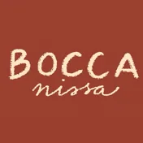
Rooftop · Nice
Rooftop végétalisé proposant des tapas méditerranéennes et des cocktails créations dans une atmosphère lounge et festive.
Bar à cocktails · Nice
Bar à cocktails sur le port inspiré des speakeasies avec des sélections musicales hip-hop, R&B et généralistes.
Infos relevées le 10 novembre · source

Beach club · Nice Partenaires
Beach club organisant des afterworks festifs sur les galets avec DJ sets deep-house en saison estivale.
Infos relevées le 10 novembre · source
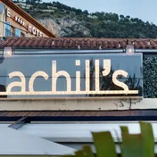
Rooftop · Villefranche-sur-Mer
Rooftop offrant une vue panoramique sur la rade avec service de cocktails créatifs et ambiance musicale.
Infos relevées le 10 novembre · source
Bar à cocktails · Villefranche-sur-Mer
Établissement branché en front de mer combinant mixologie pointue, street food du monde et ambiance musicale rythmée.
Infos relevées le 10 novembre · source
Beach club · Villefranche-sur-Mer
Plage privée saisonnière prisée pour se détendre au bord de l'eau au son de musiques électro-lounge.
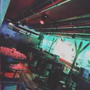
Bar · Saint-Laurent-du-Var
Bar de nuit du port de plaisance avec dancefloor et DJ sets aux programmations commerciales, urbaines et reggaeton.
Infos relevées le 10 novembre · source
Bar à cocktails · Saint-Laurent-du-Var
Bar festif avec terrasse portuaire servant planches et cocktails maison accompagnés de DJ sets.
Infos relevées le 10 novembre · source
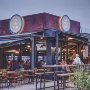
Pub · Saint-Laurent-du-Var
Pub maritime décontracté proposant des bières pression, des retransmissions sportives et une fin de soirée festive.
Infos relevées le 10 novembre · source
Bar · Saint-Laurent-du-Var
Établissement festif en bord de mer accueillant des soirées animées par des DJ sets house, latino et généralistes.
Infos relevées le 10 novembre · source
Pub · Cagnes-sur-Mer
Grand pub moderne proposant bières, retransmissions sportives et DJ sets à thème durant le week-end.
Infos relevées le 10 novembre · source
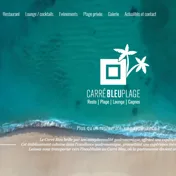
Beach club · Cagnes-sur-Mer
Beach club et bar lounge du bord de mer servant tapas et cocktails sur fond de deep-house au coucher du soleil.
Infos relevées le 10 novembre · source
Beach club · Cagnes-sur-Mer
Plage privée décontractée située au Cros-de-Cagnes pour boire un verre en plein air avec une ambiance lounge.
Infos relevées le 10 novembre · source
Club · Cannes
Club rétro et glamour situé au Palm Beach, animé par de la musique disco revisitée, de la house et des remixes pop.
Infos relevées le 10 novembre · source

Bar à cocktails · Cannes
Bar à cocktails et club intimiste du Carré d'Or proposant des créations signature et des DJ sets électro et tech-house.
Infos relevées le 10 novembre · source
Thursday Session w/ Alex DuffFriday Connection — Chris.A B2b Ugo PuccinelliLizzie & Friends — Saturday House Session
Pub · Cannes
Pub irlandais et lounge très fréquenté par les étudiants, combinant concerts de rock live et soirées dansantes avec DJ.
Infos relevées le 10 novembre · source
Bar · Cannes
Bar festif aménagé dans une cave voûtée du Suquet où l'on danse sur des hits commerciaux et du reggaeton.
Infos relevées le 10 novembre · source
Rooftop · Cannes
Rooftop avec vue panoramique sur le Vieux-Port proposant des cocktails créatifs dans une ambiance musicale deep house.
Infos relevées le 10 novembre · source
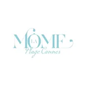
Beach club · Cannes
Plage privée festive de la Croisette rythmée par des DJ sets solaires, de la disco-house et des chants de variété.
Infos relevées le 9 novembre · source
Club · Juan-les-Pins
Complexe nocturne au décor tropical très populaire auprès des 18–25 ans pour ses soirées aux musiques commerciales et urbaines.
Infos relevées le 10 novembre · source
Club · Juan-les-Pins
Boîte de nuit axée sur les musiques urbaines avec des sets rap, afrobeat, shatta et électro.
Infos relevées le 10 novembre · source
Bar à cocktails · Juan-les-Pins
Bar à cocktails exotique emblématique réputé pour ses spectacles de danse brésilienne et son ambiance carnavalesque.
Infos relevées le 10 novembre · source
Pub · Antibes
Pub animé situé le long des remparts, servant des bières variées au rythme de concerts et de sets pop-rock.
Infos relevées le 10 novembre · source
Bar · Antibes
Bar festif du vieil Antibes prisé en fin de soirée pour ses bières pression, ses shots et ses playlists rock et généralistes.
Infos relevées le 10 novembre · source

Bar · Antibes
Cave voûtée insolite où l'on déguste de l'absinthe traditionnelle dans une atmosphère de piano-bar d'époque.
Infos relevées le 10 novembre · source
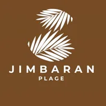
Beach club · Golfe-Juan
Établissement de bord de mer au décor balinais proposant cocktails, beach parties et DJ sets afro house et disco house.
Infos relevées le 10 novembre · source
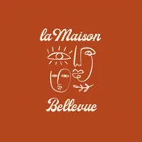
Bar à cocktails · Le Cannet
Bar lounge avec terrasse panoramique sur les hauteurs du vieux Cannet offrant des cocktails au coucher du soleil.
Infos relevées le 10 novembre · source
Club · Monaco
Boîte de nuit emblématique en plein air autour d'un lagon avec DJ sets internationaux EDM, House et Hip-Hop.
Infos relevées le 9 novembre · source
Club · Monaco
Club situé sur le port Hercule prisé des jeunes pour son ambiance animée au rythme de mix électro, commercial, reggaeton et hip-hop.
Infos relevées le 10 novembre · source
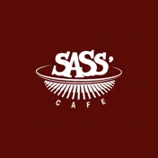
Bar · Monaco
Restaurant festif et bar de nuit proposant des concerts live suivis de DJ sets jusqu'au petit matin.
Infos relevées le 9 novembre · source
Bar · Monaco
Bar musical situé sur le port Hercule accueillant des concerts live puis des DJ sets jusqu'à 4 heures.
Infos relevées le 10 novembre · source
Pub · Monaco
Microbrasserie artisanale sur le port avec retransmissions sportives et DJ sets commerciaux en soirée.
Infos relevées le 10 novembre · source
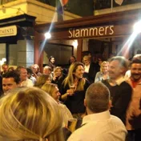
Pub · Monaco
Pub cosmopolite et décontracté à La Condamine servant bières et shooters sur fond de musique pop et rock.
Infos relevées le 10 novembre · source
Rooftop · Monaco
Rooftop sur le Café de Paris au décor de jungle proposant cocktails créatifs et musique deep house aux sonorités tropicales.
Infos relevées le 10 novembre · source
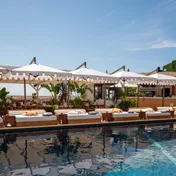
Beach club · Monaco
Beach club perché au 7e étage autour de la piscine avec sets house assurés par des DJ résidents.
Infos relevées le 10 novembre · source
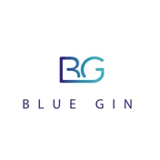
Bar à cocktails · Monaco
Bar lounge avec terrasse sur la mer proposant des cocktails et une ambiance musicale nu-disco et chill-house.
Infos relevées le 10 novembre · source
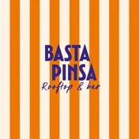
Rooftop · Beausoleil
Rooftop surplombant la principauté idéal pour partager des pinsas et écouter des DJ sets lounge et pop.
Infos relevées le 10 novembre · source
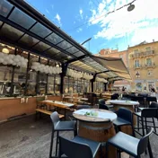
Bar à cocktails · Beausoleil
Bar à tapas et cocktails convivial proposant des soirées à thème, concerts acoustiques et musique latino.
Infos relevées le 10 novembre · source
Pub · Beausoleil
Pub de quartier décontracté servant des bières artisanales devant des retransmissions sportives sur fond de musique rock.
Infos relevées le 10 novembre · source
Bar · Menton
Bar festif en front de mer accueillant la jeunesse locale sur des sets DJ reggaeton, commercial et électro.
Infos relevées le 10 novembre · source
Pub · Menton
Pub sous les arcades face à la mer proposant bières pression, retransmissions sportives, concerts live et sets pop-rock.
Infos relevées le 10 novembre · source
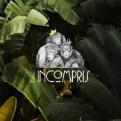
Lounge · Menton
Restaurant et bar lounge en bord de mer offrant tapas, cocktails signature et soirées animées par des DJ sets house.
Infos relevées le 10 novembre · source
Bar à cocktails · Menton
Bar chaleureux du Vieux-Port spécialisé dans les rhums arrangés sur des rythmes tropicaux, funk et latino.
Infos relevées le 10 novembre · source
Rooftop · Menton
Bar perché au septième étage avec vue panoramique servant cocktails et tapas dans une ambiance chill-out.
Infos relevées le 10 novembre · source
Club · Toulon
Club historique proposant afterwork, karaoké et soirées clubbing aux rythmes généralistes, urbains et latino.
Infos relevées le 10 novembre · source
Urban ShattaBefore Pacific Neon NightZouk Love Toulon Edition Chic
Club · Toulon
Discothèque festive en centre-ville animée par des drag shows et des sets house, électro et pop.
Infos relevées le 10 novembre · source

Bar · Toulon Partenaires
Bar festif du Mourillon servant bières et cocktails avec DJ sets et musique live.
Infos relevées le 10 novembre · source
Pub · Toulon
Pub convivial proposant bières artisanales, tournois de fléchettes, pizzas et DJ sets le week-end.
Infos relevées le 10 novembre · source
Bar à cocktails · Toulon
Bar à cocktails de style speakeasy réputé pour ses créations mixologiques et son ambiance intimiste.
Infos relevées le 10 novembre · source
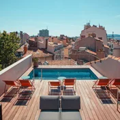
Rooftop · Toulon
Toit-terrasse avec mini-piscine offrant une vue sur les toits pour des apéros au coucher du soleil.
Infos relevées le 10 novembre · source
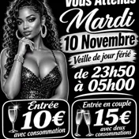
Club · La Seyne-sur-Mer
Club nocturne organisant des soirées à thème au son de musiques urbaines, afro, amapiano et électro.
Infos relevées le 10 novembre · source
Beach club · La Seyne-sur-Mer
Club de plage saisonnier proposant apéros sunset les pieds dans le sable, tapas, cocktails et DJ sets.
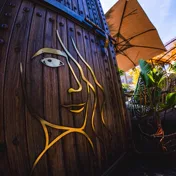
Bar · Hyères
Bar festif et restaurant d'ambiance sur le port proposant cocktails et programmation musicale pop, funk et house.
Infos relevées le 10 novembre · source
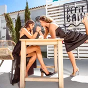
Beach club · Hyères
Lieu festif en bord de mer connu pour ses beach parties et ses soirées animées par des DJ sets électro.
Infos relevées le 10 novembre · source
Bar à cocktails · Hyères
Bar afterwork du port disposant d'une terrasse pour déguster bières locales, sushis et assister à des DJ sets.
Infos relevées le 10 novembre · source
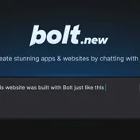
Pub · Six-Fours-les-Plages
Pub festif avec bières, burgers, retransmissions sportives et piste de danse animée par des soirées DJ ou SBK.
Infos relevées le 10 novembre · source
Bar · Six-Fours-les-Plages
Bar en front de mer accueillant des concerts en direct, des soirées à thèmes et des ambiances dansantes.
Infos relevées le 10 novembre · source
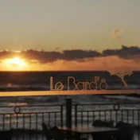
Beach club · Sanary-sur-Mer
Établissement surplombant la plage de Portissol proposant cocktails signatures et DJ sets électro et deep house.
Infos relevées le 10 novembre · source
Beach club · Sanary-sur-Mer
Terrasse aménagée sur les rochers offrant planches à partager, musique ensoleillée et apéros face à la mer.
Infos relevées le 10 novembre · source
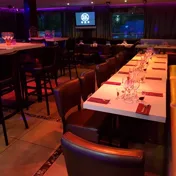
Club · Bandol
Resto-club proposant des formules repas, des blind-tests et une piste de danse animée par des classiques pop et hits actuels.
Infos relevées le 10 novembre · source
Lounge · Bandol
Bar intimiste avec terrasse panoramique sur l'anse de Renécros, idéal pour boire un verre au son d'une musique lounge.
Infos relevées le 11 novembre · source
Bar à cocktails · Bandol
Bar situé sur le port servant des cocktails créatifs et des tapas dans une ambiance musicale festive.
Infos relevées le 11 novembre · source

Bar · Cannes Partenaires
Pub américain et bar de nuit proposant burgers, bières, cocktails et jeux tels que billard, fléchettes et baby-foot. L'ambiance y est festive et décomplexée avec retransmissions sportives et DJ sets jusqu'à 5h.
Infos relevées le 11 novembre · source

Bar · Cannes Partenaires
Bar de nuit chic et intimiste servant des cocktails créatifs et des spiritueux. L'établissement dispose d'une terrasse et propose des soirées thématiques animées par des DJs jusqu'à 2h30.
Infos relevées le 11 novembre · source

Bar · Cannes Partenaires
Cet établissement festif propose des cocktails signatures et des spécialités méditerranéennes comme des pinsas et pizzas à partager. L'ambiance y évolue au cours de la soirée avec des DJ sets et des thématiques musicales entraînantes.

Club · Nice Partenaires
Discothèque du centre-ville niçois proposant des soirées dansantes avec DJ sets aux styles généraliste, pop et hip-hop. L'établissement dispose également d'un espace avec service de tables VIP.

Bar · Antibes Partenaires
Bar lounge éphémère installé en saison face à la mer au Bastion Saint-Jaume et proposant des soirées pop-up le reste de l'année. On y déguste cocktails et planches à partager dans un cadre musical chill ou festif.

Bar · Nice Partenaires
Bar festif du Carré d'Or niçois servant cocktails maison et tapas à partager dans une ambiance animée par des soirées à thème et des sets musicaux.

Club · Saint-Mandrier-sur-Mer Partenaires
Club privatif et lounge bar situé face au port de Saint-Mandrier, organisant des soirées thématiques et des événements privés.

Club · Nice Partenaires
Établissement de nuit proposant des soirées clubbing avec DJ sets au centre de Nice.

Bar · Cannes Partenaires
Bar de nuit et bar à cocktails situé dans le Carré d'Or de Cannes, animé par des DJ sets.

Beach club · Saint-Aygulf Partenaires
Concept de soirées festives estivales en bord de mer proposant restauration, danseurs et musique latino et afrobeat les pieds dans le sable.

Bar · Cannes Partenaires
Rhumerie située dans le Carré d'Or cannois, ouverte tous les soirs de la semaine.

Beach club · Vallauris Partenaires
Plage privée et restaurant de bord de mer à Golfe-Juan, proposant location de transats, cuisine méditerranéenne et DJ sets.

Bar · Toulon Partenaires
Bar à bière nomade en plein air intervenant sur divers événements festifs et marchés nocturnes dans le Var.

Bar · Antibes Partenaires
Bar lounge et club du vieil Antibes proposant tapas, cocktails, concerts live et soirées animées par des DJ.
Bar · Nice Partenaires
Bar à cocktails festif et d'ambiance situé dans le Vieux-Nice proposant des tapas, des fléchettes en sous-sol et des soirées musicales.

Bar · Antibes Partenaires
Pub et bar d'ambiance proposant des retransmissions sportives, des tables de billard gratuites, des concerts live et des burgers.
Club · Antibes
Lieu de l'association culturelle Green Musik à Antibes : soirées techno, psytrance et hard trance organisées par des collectifs comme Les Tocards.